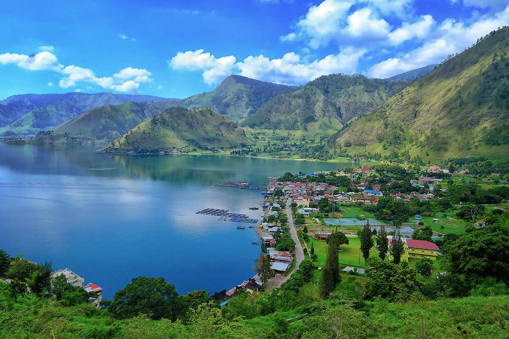
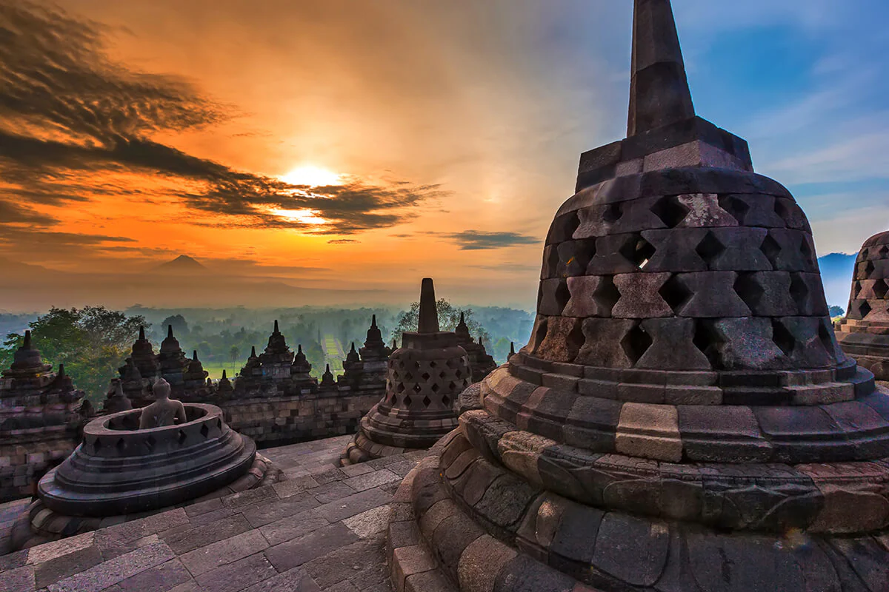

| BALI | JAKARTA | PADANG |
 |
 |
 |
| SUMATRA UTARA | DAERAH ISTIMEWA YOGYAKARTA | MALUKU |
|  |  |  |
Dengan populasi lebih dari 10 juta orang, tidak mengherankan jika wisata Jakarta sangat beragam mulai dari taman hiburan hingga wisata kebudayaan dan perekonomian Indonesia. Rencanakan liburan keluarga Anda, petualangan rombongan atau expedisi solo selanjutnya untuk melihat pantai, pasar dan banyak lainnya di Ibu Kota Indonesia dan kota metropolitan terbesar kedua di dunia!
Monumen Nasional, atau Monas, menjulang di jantung kota di Lapangan Merdeka dan berdiri sebagai sumber kebanggaan bagi seluruh negeri. Monumen dari marmer ini berdiri dengan ketinggian 137 meter, dan nyala api berlapis emas padat – seberat 14,5 ton! – di puncak menara adalah pengingat tentang bagaimana negara memproklamasikan kemerdekaannya. Naiki lift ke atas untuk melihat pemandangan ibu kota negara dari atas, atau tetaplah berada di bawah untuk menyaksikan sejarah di Museum Sejarah Nasional dan Balai Kemerdekaan, di mana pengunjung dapat melihat teks asli Proklamasi Kemerdekaan.
Dengan kota lebih dari 28 juta orang, sungguh sulit untuk membayangkan kota sibuk ini awalnya didirikan di area yang luasnya hanya sekitar satu kilometer persegi. Pada abad ke 16, wilayah ini sebelumnya disebut Batavia, di mana Kolonial Belanda mendirikan pusat perdagangan ketika mereka pertama kali sampai. Kini, wilayah ini disebut sebagai Kota Tua atau Kota Tua Jakarta, yang penuh dengan pengingat awal mulanya yang sederhana.
Kagumi arsitektur kolonial Belanda yang dilestarikan dalam rumah dan bangunan yang masih berdiri di jalanan. Jika Anda ingin mengamati lebih dalam sejarah di masa lalu, masuklah ke salah satu museum khusus yang tersebar di seluruh area. Museum favorit wisatawan lokal dan mancanegara diantaranya adalah Museum Maritim Jakarta, Museum Sejarah Jakarta dan Museum Wayang, yang menampilkan beragam wayang Jawa, boneka, patung dan lukisan.
Ikuti tur audio edukatif yang atraktif mengenai perdagangan rempah di Indonesia bertahun-tahun silam dengan melihat mata uang sejak abad ke 14 di Museum Bank Indonesia. Awalnya dibuat sebagai kantor pusat dari Bank Sentral Hindia Belanda, museumnya kini menjadi tempat menyimpan koleksi uang kertas dan koin. Pelajari bagaimana kegigihan bangsa melewati perdagangan monopoli rempah-rempah, masa penjajahan Jepang dan krisis ekonomi terakhir pada 1997.
Pelajari keberagaman Indonesia dengan mengelilingi replika dari 25 lebih rumah tradisional yang mewakili setiap provinsi di seluruh negeri. Terletak di Jakarta Timur, Taman Mini melestarikan warisan budaya melalui pameran interaktif dan pertunjukan tarian, pakaian dan arsitektur tradisional. Dengan area seluas lebih dari satu kilometer persegi, tempat ini sempurna untuk rekreasi keluarga seharian penuh.
Taman ini juga menampilkan kerukunan beragama dengan adanya kuil, gereja dan masjid. Sebagai tambahan paviliun provinsi, taman ini memiliki danau, kereta gantung, taman alam, teater pertunjukan, fasilitas renang, waterpark, teater IMAX, dan sejumlah museum, termasuk Museum Informasi dan Museum Komodo dan Reptil.
Dikenal secara lokal sebagai Bangunan Gajah, Museum Nasional Indonesia berisi koleksi artefak paling lengkap di seluruh Asia Tenggara. Museum ini, mudah dikenali karena adanya patung gajah perunggu di pintu masuk, terletak di sebelah barat Lapangan Merdeka dan telah menjaga warisan nasional selama lebih dari 200 tahun. Berjalan lah menyusuri sejarah Indonesia dan melihat pameran aneka patung batu, mata uang nasional, catatan arkeolog dan keramik asli. Kenali raja yang telah mendonasikan patung gajah dan banyak lainnya, karena Museum Nasional memamerkan koleksi lebih dari 100.000 artefak yang juga dijadikan pusat pendidikan.